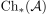
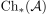
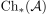

quasi isomorphism and cone as exact chain complex
1. Proposition
Let  be an abelian category and  be the category of chain complexes.
Suppose
be an abelian category and  be the category of chain complexes.
Suppose  are chain complexes and a chain map
are chain complexes and a chain map
TFAE:
 is a quasi-isomorphism
is a quasi-isomorphism- is an exact chain complex
Let be an abelian category and  be the category of chain complexes.
Suppose are chain complexes and a chain map
TFAE:
is a quasi-isomorphismDate: nil
Created: 2024-10-14 Mo 09:04
 2)
2)